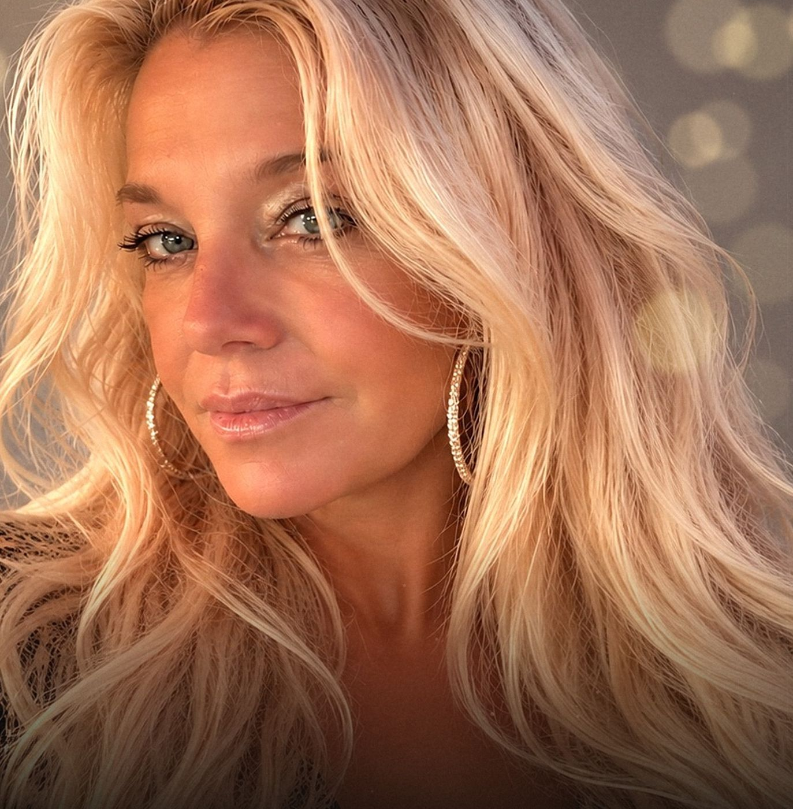
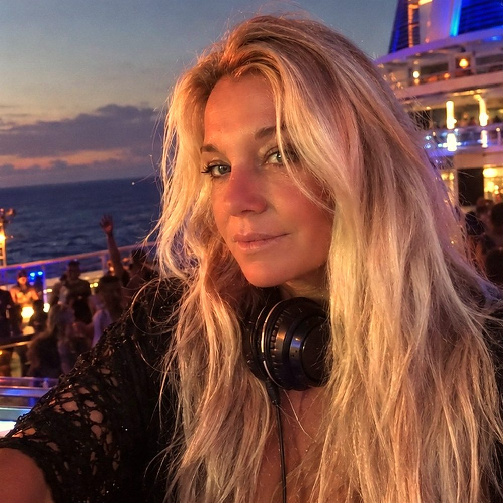
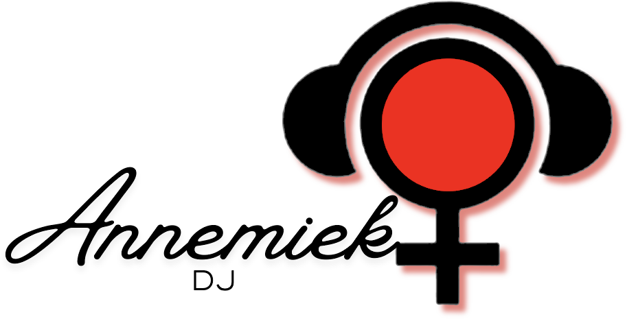

Logo · gold PNG Download

Spinning since ’99, still not dizzy
Resident DJ Virgin Voyages · Valiant Lady Dec 2026 – Feb 2027
The season
Valiant Lady
Resident DJ on Virgin Voyages
5 December 2026 – 6 February 2027. Caribbean itineraries, a double New Year’s Eve, and home island Bonaire on 2 February.
-
5 Dec 2026 – 6 Feb 2027
Resident DJ
Valiant Lady · Virgin Voyages
The whole season. Caribbean calls include Aruba, Curaçao, Barbados and St. Lucia.
-
New Year
Highlight
Double New Year’s Eve
Valiant Lady
The night this season is built around. Dress like you mean both of them.
-
2 Feb 2027
Home
Bonaire
Home island · Valiant Lady
A call at the island she has lived on since 2015.
On these itineraries
- Aruba
- Curaçao
- Barbados
- St. Lucia
- Bonaire
Since ’99
Still not dizzy
A room, a hunch, and the next record.
Annemiek has been choosing the next record since 1999, long enough to trust a hunch and still easily surprised by a room. She debuted as one half of DJNA, a female duo, at Miami’s Winter Music Conference in 2000, then played the early Ultra Music Festivals and Miami clubs before the map opened up: Spain, Mykonos, Japan, South Africa, Israel.
From 2003 she was resident DJ and event manager at CDLC (Carpe Diem) in Barcelona, and she stayed for four years. In 2007 she moved to Ibiza for more than six years, performing with singer Rebeka Brown at Amnesia, Space and Privilege. Bonaire has been home since 2015, with residencies at Hangout Beach Bar, Ocean Oasis and Sorobon Luxury Beach Resort. She was resident DJ for Royal Caribbean in 2026. From December 2026 she is resident DJ on Virgin Voyages’ Valiant Lady. Still not dizzy.

Press kit
For the caption
The mark, one portrait, and the words.
DJ Annemiek has been behind the decks since 1999. She debuted as one half of the duo DJNA at Miami’s Winter Music Conference in 2000, held residencies from Barcelona to Ibiza, and has been based on Bonaire since 2015. She was resident DJ for Royal Caribbean in 2026, and from December 2026 she is resident DJ on Virgin Voyages’ Valiant Lady.
Long bio
Annemiek has been choosing the next record since 1999, long enough to trust a hunch and still easily surprised by a room. She debuted as one half of DJNA, a female duo, at Miami’s Winter Music Conference in 2000, then played the early Ultra Music Festivals and Miami clubs before the map opened up: Spain, Mykonos, Japan, South Africa, Israel.
From 2003 she was resident DJ and event manager at CDLC (Carpe Diem) in Barcelona, and she stayed for four years. In 2007 she moved to Ibiza for more than six years, performing with singer Rebeka Brown at Amnesia, Space and Privilege. Bonaire has been home since 2015, with residencies at Hangout Beach Bar, Ocean Oasis and Sorobon Luxury Beach Resort. She was resident DJ for Royal Caribbean in 2026. From December 2026 she is resident DJ on Virgin Voyages’ Valiant Lady. Still not dizzy.


Logo · black PNG Download

Portrait
At the booth
One frame Download

Words
Biography
For the page Download
Download press kit
Tech rider available on request with the booking. A standard club booth is welcome: two players, a mixer, and a clear view of the dance floor.
Booking
Have a room in mind
Say when, and what kind of night it should be.
The date, the room, and how late everyone is willing to stay up.
Book Annemiek